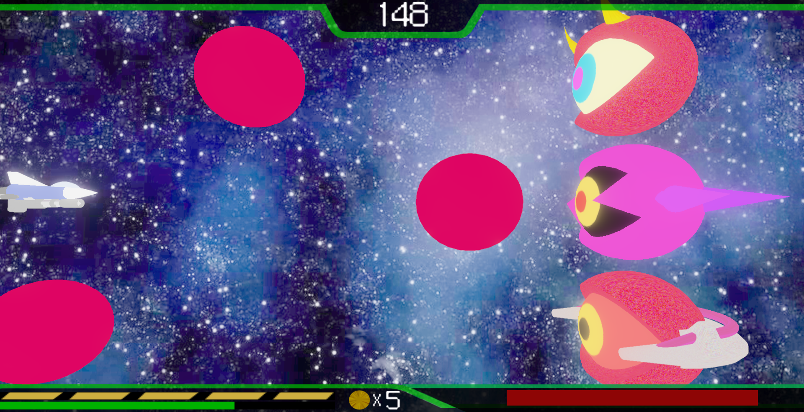

河原電子ビジネス専門学校
ゲームクリエイター科1年 国宇雄飛
1-1、1-2、1-3の3つのステージが存在し、それぞれのステージのボスを倒してスコアを獲得し、より高いランクを目指すシューティングゲームです。
制作人数
1人
制作期間
2022年5月~2022年12月
ゲームジャンル
シューティングゲーム
プレイ人数
1人
使用言語
C++
開発環境
担当ソースコード
１－１のボスの行動は３つあります。１つ目は、拡散弾で複数の弾をランダムな場所に発射します。
２つ目は追尾弾で、弾を生成したときに一度だけボスからプレイヤーに向かうベクトルを計算して正規化し、10倍して移動させています。
３つ目はかみつき攻撃です。ボスからプレイヤーに向かうベクトルを計算し、そのベクトルを正規化し16倍してボスを移動させています。

１－２のボスの行動は３つあります。１つ目は、ボス３体のランダムで１体が大きな弾を前方に打つのを何度か繰り返します。

２つ目は、追尾弾です。上から順番に追尾弾を打ちますが、下の１体は生成されてから何度かボスからプレイヤーに向かうベクトルを計算させて、しばらくの間プレイヤーを追いかけます。

３つ目は突撃です。３体のボスが順番にプレイヤーに向かって突撃してきて、何度か繰り返します。
１－３のボスの行動は５つあります。１つ目は拡散弾です。
２つ目は追尾弾です。打ち出す全ての弾が生成されてからしばらくの間プレイヤーを追いかけます(黒い線で囲んだものが追尾弾)。
３つ目はボム生成です。ボムのXY座標をランダムに決めて複数生成し、プレイヤーと同じZ軸に移動させます。ボスのHPによってボムの生成数が変わります。ボムの生成が終わって次の行動を決めるときはボム以外から選ばれます。
▼ボスのHPが31%以上のとき
▼ボスのHPが30%以下のとき
４つ目は回転攻撃です。ボスのZ座標をプレイヤーのZ座標と同じにして、自身を回転させながら画面を横切って攻撃します。画面上側か下側かランダムに決めて２回行動します。この行動を行う前は必ずボムを生成します。

５つ目はビーム攻撃です。ボスのHPが30%を切った時に強制的に行う行動です。ビームを打つ行動をしている間はダメージを受けません。

ゲームパッドの左スティックの入力量を取得することで乗り物に近い動きにしました。

ステージ選択画面で、挑戦したステージのランクを表示するために、画面が切り替わるたびにそれぞれのステージのランクを示す値を次に生成する画面のクラスの値に代入しています。
１-３のボスがビームエフェクトを再生し始めたら、ボスの座標からプレイヤーまでのベクトルを計算します。次に、(0.0f,0.0f,0.0f)に設定したビームエフェクト用のベクトルNewdiffのX軸を4.0ずつ、Y軸を2.5ずつ、計算したベクトルより小さい間増やして正規化したものをmoveSpeedとします。そして、moveSpeedのX軸とZ軸をatan2関数でY軸の角度に変換してangleに代入し、angleを元にY軸回りの回転クォータニオンを作成しました。Y軸とZ軸で同様の処理を行いX軸回りの回転クォータニオンを作成し、２つのクォータニオンを乗算し、ビームを回転させプレイヤーに徐々に近づくようにしました。 このステージでは、ボスがビームを打った時に1度きりのスーパーバリアを使用してビームを無効化できます。 ですが、ある程度ステージクリアが難しくなるようにしたかったため、ビームエフェクト用のベクトルNewdiffが計算したベクトルより大きくなったら、常に計算したベクトルを代入して、プレイヤーにビームが当たり続けるようにしました。
ステージの１-３のボスは、視点を変えてエネミーが正面に見えるようにして迫力を出しクライマックス感を出しました。ボスの見た目をコアのような見た目にして他のエネミー達を束ねるボスのようにしました。
▼1-3のボスステージ以外のステージ

▼1-3のボスステージ
ステージを選択した後に画面上下の扉が閉まって、開いた時にステージの画面が出るようにして、出撃しているように感じるようにしました。
▼ステージ選択画面からステージ画面に移った画面